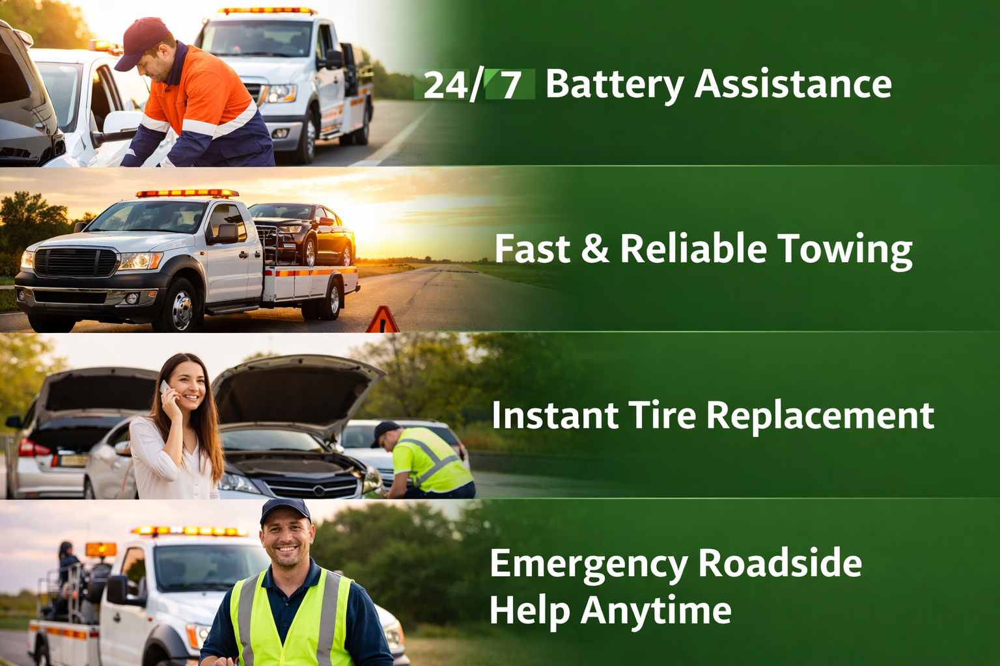
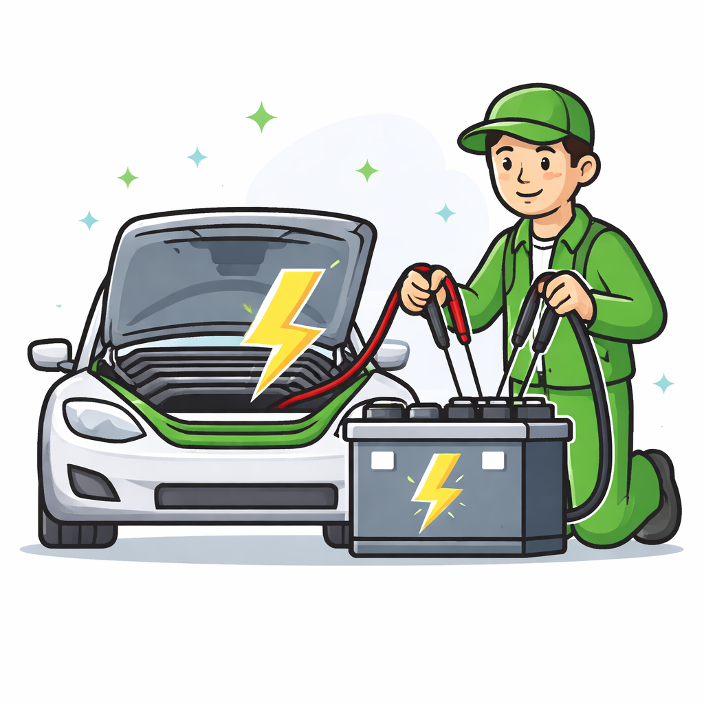
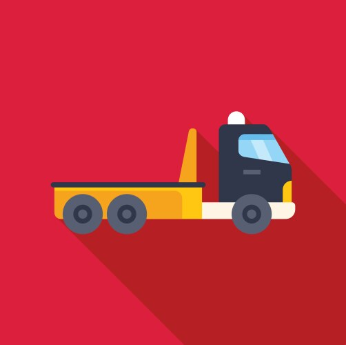
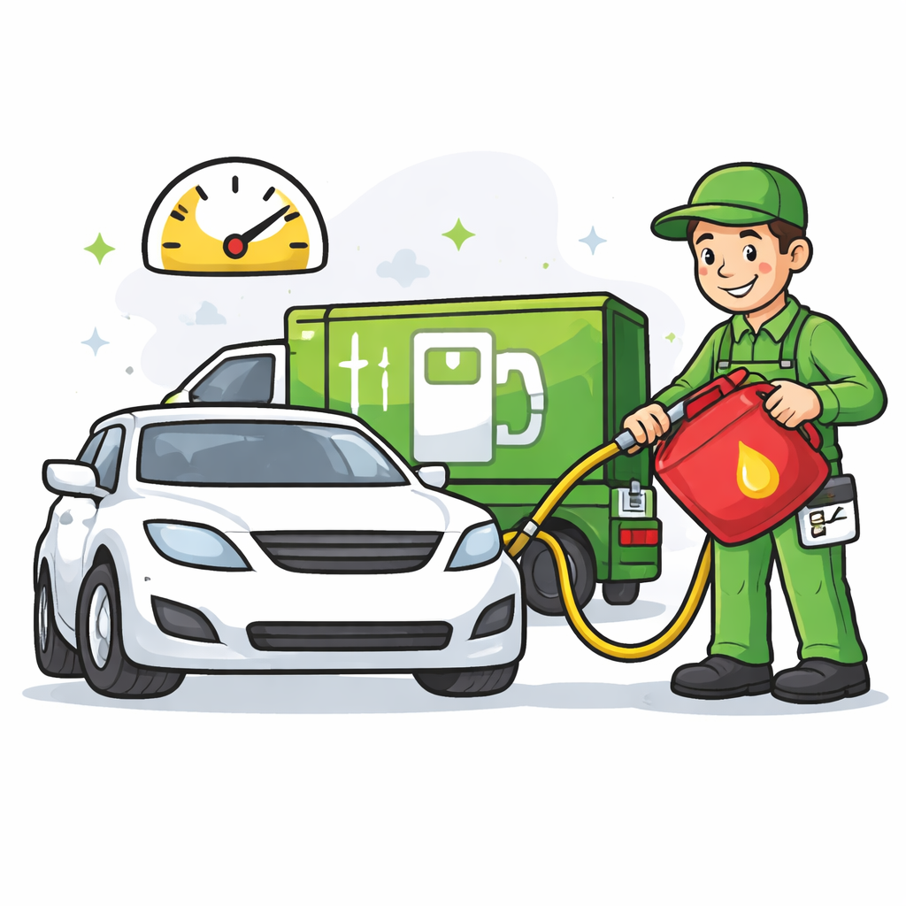

Your journey meets comfort. We provide prompt towing, fuel delivery, and emergency repairs whenever you need them. Fast, reliable, and always near you.
Get Help Now

A battery jump start is a service used when a car battery is dead. A technician uses jumper cables or a jump starter to restart the vehicle quickly.
Request Service
A towing service helps move a vehicle that cannot be driven to a nearby Garage, Service Center, or Safe location securely and efficiently.
Request Service
Out of gas? Our fuel delivery service provides petrol or diesel straight to your exact location when your vehicle unexpectedly runs out of fuel.
Request Service